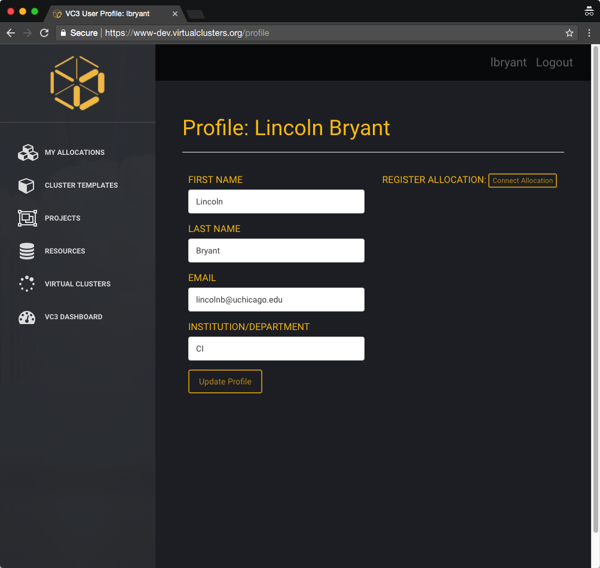
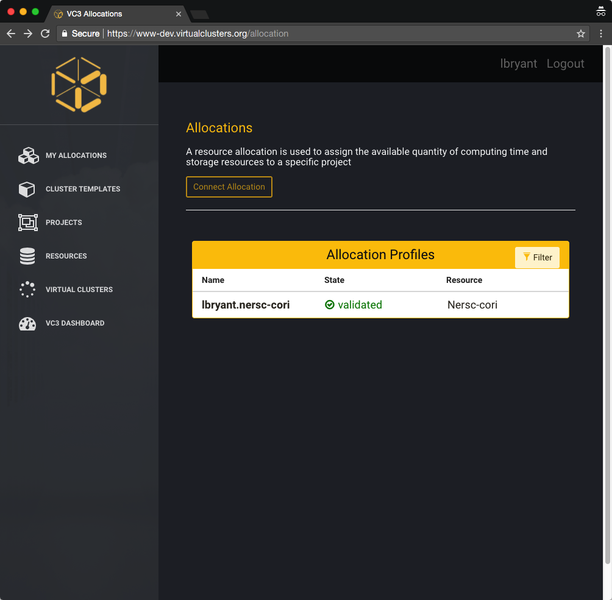
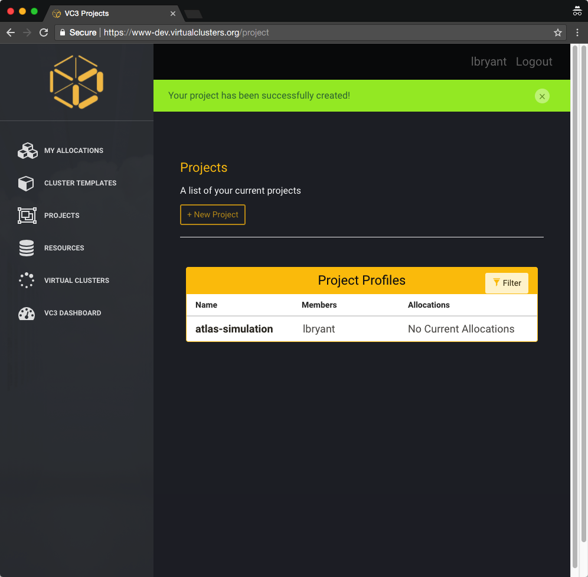

VC3 User Guide
Building Your First Virtual Cluster
Prerequisites
In order to use VC3, you’ll need an allocation or account with with a supported target resource. These include, but are not limited to:
- University of Chicago - Research Computing Center
- University of Notre Dame - Center for Research Computing
- Brookhaven National Laboratory - Scientific Data & Computing Center
- Syracuse University - Research Computing
- Texas Advanced Computing Center
- NERSC
- Amazon Web Services
- Open Science Grid
- and more!
Institutions and resources are added frequently - be sure to subscribe to our newsletter and visit Virtual Clusters!
Login or Create Account
When you first visit Virtual Clusters, you’ll be presented with a Login link in the top right of the screen. Click “Login” - this will take you to a Globus sign-in site.

Sign in to Globus
You will then be asked to sign in with your institutional identity, or your Globus ID. If you are using the former, simply type in the name of your institution and click “Continue”. Proceed to Step 3a.
Otherwise, click “Sign in with Globus ID” and proceed to the alternate Step 3b.

Login with your institutional ID
You should be presented with a login page for your institutional ID, with your institution’s branding. Go ahead and sign-in now. Note that your password is not sent to the VC3 or Globus web portals. Continue to step 4.

Login with your Globus ID
(Alternative step - if you do not have an institutional ID supported by Globus)
<– Globus ID page –>
Complete or update your VC3 profile
Once you have signed in, you’ll be asked to update or complete your VC3 profile with information such as your Institution and any other information we cannot directly extract from your Globus account. Click “Update Profile” once done.

Connect an Allocation
After updating your profile, you can connect an allocation to the VC3 service. An allocation, in VC3, is defined as combination of a username and resource target that consumes some type of compute unit - regardless of whether it is billed as Service Units (many HPC centers), dollars (AWS, GCE), or priority (HTCondor and other opportunistic systems).
Clicking My Allocations on the left shows all allocations currently associated with your account. You may select a new one by clicking Connect Allocation.

You will be able to select a resource target from the drop down menu, and enter an account name for the resource. This is the same account name that you use to SSH to the remote system.

Once you’ve connected your allocation, the system will validate it.

In order to create a virtual cluster, the VC3 software needs to be able to SSH to the remote resource. If you click your allocation, you should see a section titled Public Token.

You will need to add this token to your Unix account, in the file ~/.ssh/authorized_keys. You can either edit this file with your favorite editor (such as nano, vim, or emacs), or use the echo command to append it to the authorized keys file.

This token allows the VC3 system to SSH into a cluster as yourself and submit jobs on your, or your project’s, behalf.
Defining a Project
VC3, as a platform for cooperative scientific computing, allows you create projects to share your allocations and virtual clusters with trusted members of your group, laboratory, or collaboration. To start a new project, click “Projects” on the sidebar, then click “+ New Project”.

You may give your project an aribtrary name and choose initial project members. Once finished, click “Create Project”.

You should be returned to the Projects page, where you will be able to see all of your projects and memberships.

Creating a Cluster Template
VC3 allows users to create “Cluster Templates” that describe the components of their virtual cluster, including number of head nodes, worker nodes, etc. We currently support HTCondor and WorkQueue clusters with dynamic worker nodes, and fixed head nodes.
To define a new template, click the “Cluster Templates” link on the left panel. You’ll be able to give your cluster a name, select framework, and number of workers. Click “Define Cluster” to finish creating the template.

Resources
The VC3 team curates an ever-expanding list of resources for end-users, with a focus on Campus Clusters, HPC centers, and Cloud resources. You can find these resources by clicking the “Resources” link on the left panel.
You can also click an individual resource and see expanded information, such as batch system type, links to documentation, etc.